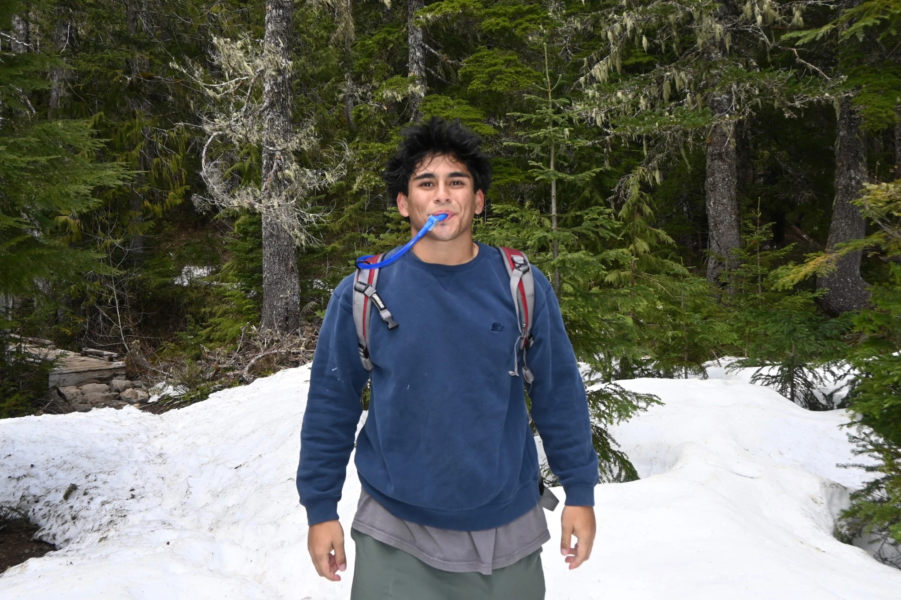
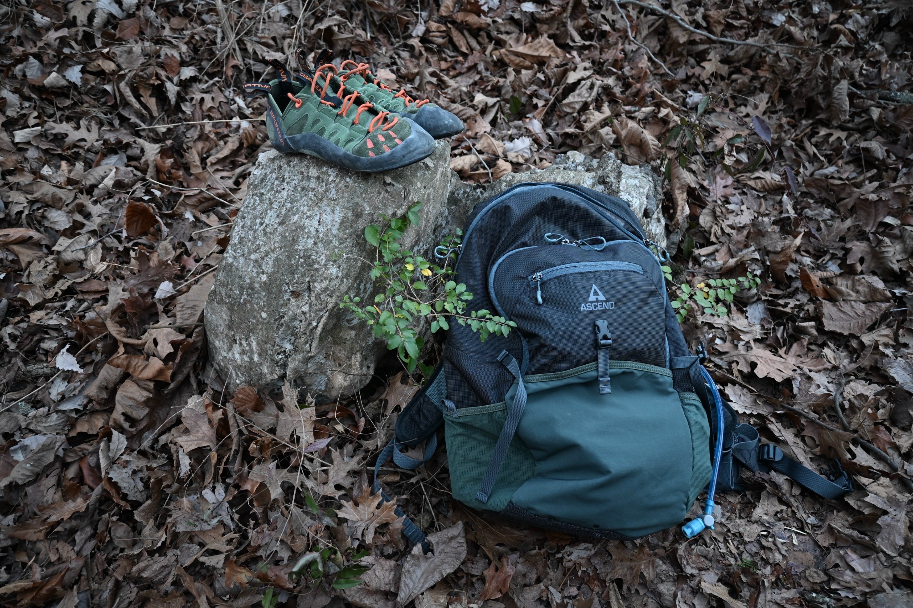

Along for the tripMy camera &
My camera &
trail essentials.
A camera for the moments I want to keep. A backpack for the miles in between. Here’s the gear that comes along on my travels.
Photography
Nikon Z50 II
Forested trails, mountain views, and wildlife along the way—my Nikon Z50 II comes with me to capture the details I want to bring home.
Explore my photography →Hiking essentials

CamelBak backpack
From a walk through the woods to a stop among mountain wildflowers, my CamelBak is part of what I bring along for a day outside.

Ascend backpack
My Ascend is another pack in the rotation. Here it is taking a break beside my climbing shoes—a little glimpse of the gear behind a day in the woods.